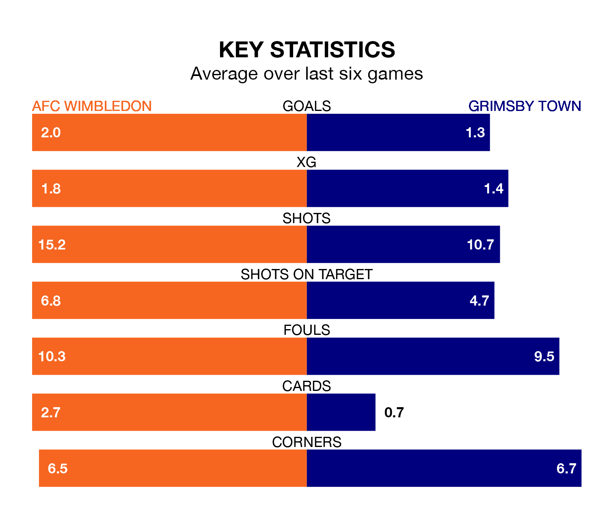

AFC Wimbledon host Grimsby Town on Saturday at the Cherry Red Records Stadium in EFL League Two.
In their last league match, on Monday, Wimbledon drew with Forest Green Rovers 1-1 away, with their goal scored by Ali Al-Hamadi.
Grimsby lost, 6-1 at home against Walsall, with Danny Rose scoring their goals.
With 35 goals in 26 games so far this season, Grimsby are scoring at below the league average rate with 1.3 goals per game. And they are conceding more than average, letting in 44 goals at a rate of 1.7 per game.
Wimbledon, meanwhile, are above average scorers, with 1.6 goals per game, compared to a league average of 1.5. They have conceded 1.1 goals per game.
Town are 20th in the table after 26 games, of which they have won six and drawn nine, earning 27 points.
The Dons are 13 places ahead of the Mariners in seventh, with 10 wins and nine draws putting them on 39 points.
In Alex Bass, the home side can rely on one of the league's safest pair of hands. He has kept nine clean sheets in his 25 appearances this season in EFL League Two.
In the visitors' net, Jake Eastwood has three clean sheets in 15 games. He has conceded a goal every 56 minutes, 60% more often than the 87 minutes between goals for Bass.
Wimbledon are in reasonable form in EFL League Two, with three wins and two draws from their last six games.
With two wins and a draw over that period, Grimsby's form is worse – they have taken seven points from 18, compared to Wimbledon's 11.
Updated: 10:36, 03/01/24